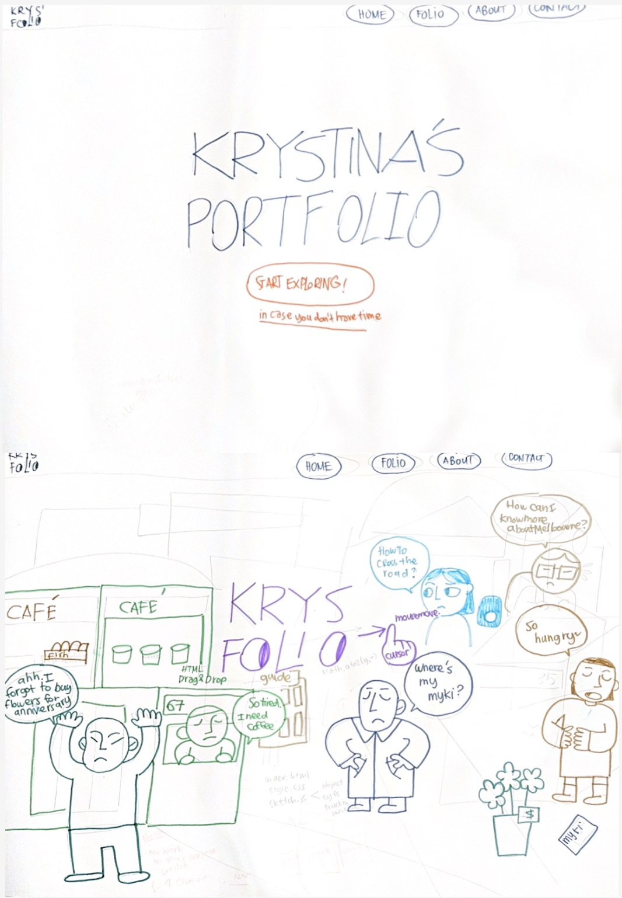
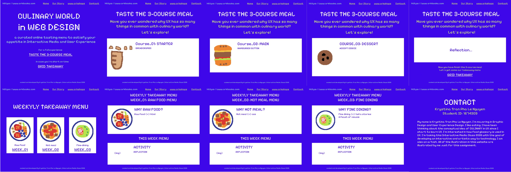

WEEKLY TAKEAWAY MENU
Week_03: FINE DINING MENU
WHY FINE DINING?
Week_03 is Fine Dining. In this week's studio, I was learnt a lot about interaction and how to turn a static website into a user-engaging website. Fine Dining to me is a method of using visual enhancement and storyline to increase the value of the services. I seek for a concept that user can see themselves in it.
THIS WEEK MENU

ACTIVITY_01_CONSULTING_INTERACTIVE_PAPER_PROTOTYPE
I receive some feedback from the consultation of interactive peper prototype. In this workbook website, I want to split the users into 2 types: value experiencence. and busy people. By clicking "Exploring", the user will be directed to a homepage of 3D cityscrape style with different characters in Melbourne. Everone is struggling with their problems, users' goal is to help them by dragging and dropping the items. Once successful, you will be given a link to the weekly journal.

HIGH-FIDELITY_INTERACTIVE_PROTOTYPE
From the above paper prototype, I realise that the techniques require for the coding are too complicated for me to code: mouseover with curse tracking, drag and drop items, etc. Hence. I decided to combine bento grid layout ideas since the Crazy 8s in week 2 to produce a workbook website reflecting my confusion and curiosity towards the language aspect of UX. Why User Experience design has lots of things in common with the Culinary World?